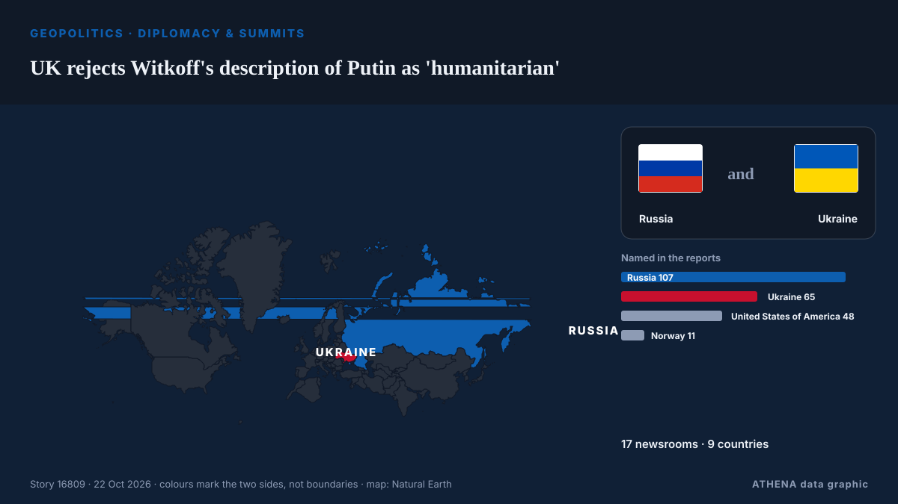

UK rejects Witkoff's description of Putin as 'humanitarian'

The United Kingdom government rejected United States Special Envoy to the Middle East Steve Witkoff's characterization of Russian President Vladimir Putin as a "humanitarian." из AzerNews
Независимые источники: 17 изданий в 9 странах, с 20 окт.; первым сообщил Asharq Al-Awsat (English); освещение на пике. ATHENA оценивает риск как высокий (6.2/10), прежде всего из-за тяжести описываемого ущерба и качества доказательств. Уверенность — 93 % (высокая); подтверждают независимые источники: 17 изданий, средняя надёжность источников — 80 %.
Почему это важно: Полномасштабное вторжение России в Украину началось в феврале 2022 года. Мониторинг следит за боевыми действиями, ударами по инфраструктуре и дипломатией вокруг войны так, как их освещает мировая пресса.
Что изменилось: 11 новых сообщений от 7 редакций за 24 часа до 22 окт..
Заголовки приводятся на английском языке, как они были опубликованы.
Коротко в цифрах
Отобрано, оценено и написано по опубликованной методологии ATHENA. Ни один редактор не вмешивается в отдельные события. Как это создаётся ›
| 20 Oct 08:20 UTC | 2 |
|---|---|
| 20 Oct 11:20 UTC | 0 |
| 20 Oct 14:20 UTC | 0 |
| 20 Oct 17:20 UTC | 2 |
| 20 Oct 20:20 UTC | 1 |
| 20 Oct 23:20 UTC | 0 |
| 21 Oct 02:20 UTC | 0 |
| 21 Oct 05:20 UTC | 4 |
| 21 Oct 08:20 UTC | 3 |
| 21 Oct 11:20 UTC | 5 |
| 21 Oct 14:20 UTC | 2 |
| 21 Oct 17:20 UTC | 5 |
| 21 Oct 20:20 UTC | 1 |
| 21 Oct 23:20 UTC | 0 |
| 22 Oct 02:20 UTC | 2 |
| 22 Oct 05:20 UTC | 0 |
| 22 Oct 08:20 UTC | 2 |
| 22 Oct 11:20 UTC | 2 |
| 22 Oct 14:20 UTC | 2 |
| 22 Oct 17:20 UTC | 2 |
| 22 Oct 07:04 UTC | 2.7 |
|---|---|
| 22 Oct 07:05 UTC | 4.4 |
| 22 Oct 07:06 UTC | 6.2 |
| 22 Oct 19:56 UTC | 6.2 |
| 22 Oct 19:56 UTC | 6.2 |
Откуда эти цифры
Значимость
Риск
Уверенность
Освещение — кто сообщил и когда
заголовок в оригинале · открывает источник- Asharq Al-Awsat (English) · Саудовская Аравия · Saudi ArabiaZelensky Meets Witkoff as US-Ukraine Relations Sink to New Lows
- Kyiv Post · Украина · UkraineWitkoff to Meet Zelensky, European Leaders in Oslo Before Moscow Trip
- The Moscow Times · Россия · RussiaKremlin Hopes Witkoff Will ‘Brief’ Putin on Talks With Ukraine and Europe
- Kyiv Post · Украина · UkraineUS Restores Intelligence to Ukraine as Witkoff Carries Peace Proposals to Putin
- Kyiv Post · Украина · UkraineTrump Says Ukraine ‘Has to Want to Make a Deal’ as Witkoff Heads to Russia
- CGTN (World) · Китай · ChinaUS special envoy Witkoff to arrive in Russia: reports
- CGTN (World) · Китай · ChinaUS envoy arrives in St. Petersburg to meet with Putin on Ukraine
- Meduza (English) · Россия · RussiaWitkoff arrives in St. Petersburg for talks with Putin, where he’s expected to present an ‘updated plan’ to end the war
- Kyiv Post · Украина · UkraineWitkoff Arrives in St. Petersburg for Putin Talks as US and Ukraine Agree on Peace Proposals
- Kurdistan24 (English) · Ирак · IraqUS Envoy Witkoff Arrives In St. Petersburg
- CGTN (World) · Китай · ChinaPutin meets with US envoy Witkoff for talks on Ukraine settlement
- Kurdistan24 (English) · Ирак · IraqWitkoff Meets Putin In St. Petersburg: Foundation For Ukraine Ceasefire Exists
- CBC News · Канада · CanadaU.S. envoy Witkoff meets with Putin in Russia amid report Musk throttled Starlink
- The New Arab · INTPutin, Witkoff meet in Russia for Ukraine war talks
- Kyiv Post · Украина · UkraineTrump Envoy Witkoff Calls Putin a ‘Humanist’ Amid Deadly Russian Attacks on Ukraine
- Kyiv Independent · Украина · UkraineZelensky supports resuming trilateral peace talks with US, Russia after Putin claims Kremlin readiness
- Meduza (English) · Россия · RussiaPutin and U.S. envoy Witkoff hold talks in St. Petersburg as Washington pushes a new plan to end the war in Ukraine
- Kyiv Post · Украина · Ukraine‘We Need to Move On’: Zelensky Won’t Wait in Oslo for Witkoff After Putin Meeting
- CBS News (World) · Соединенные Штаты · United StatesRussia says Ukraine must make "necessary decisions" to end the war
- Interfax-Ukraine (English) · Украина · UkraineTalks in St. Petersburg, Oslo constructive; work under way to organise US-Russia-Ukraine trilateral meeting – Witkoff
- The Guardian · Великобритания · United Kingdom‘You are a humanitarian also, sir’: the US feeds Putin with lies as Ukraine’s children take cover and die | Andrew Roth
- Ukrinform (English) · Украина · UkraineWitkoff says trilateral talks between the US, Russia, and Ukraine to continue at technical level
- CNBC World · Соединенные Штаты · United StatesWitkoff calls Putin a 'humanitarian' at Russia peace talks without Ukraine
- Ukrinform (English) · Украина · UkraineTrilateral talks could be held in early November following Witkoff–Putin meeting, Zelensky says
- Kyiv Post · Украина · UkraineZelensky Confirms Trilateral Talks With US, Russia Could Take Place by Early November
- Kyiv Post · Украина · UkraineWitkoff Reveals US Treasury Working With Putin’s Envoy on Economic Ties
- AzerNews · Азербайджан · AzerbaijanWitkoff: US, Russia, Ukraine to continue technical talks
- Xinhua (English) — page reader · Китай · ChinaPutin meets U.S. special envoy Witkoff in St. Petersburg
- Kyiv Post · Украина · UkrainePutin the Humanist? 10 Ways Russia Has Shown Its ‘Humanity’ in Ukraine
- Kyiv Post · Украина · UkraineWitkoff Meets Putin: Any Progress on Ukraine?
- TASS (English) · Россия · RussiaWitkoff feels optimistic after meeting with Putin — Vance
- Kyiv Independent · Украина · UkraineJust hours after being bombed, we asked people in Kyiv about Witkoff's praise of Putin
- Ukrinform (English) · Украина · UkraineUK rejects Witkoff’s characterization of Putin as “humanitarian”
- AzerNews · Азербайджан · AzerbaijanUK rejects Witkoff's description of Putin as 'humanitarian'
- Meduza (English) · Россия · RussiaPutin cites unspecified genetic research to claim Russians and Ukrainians are ‘one people’